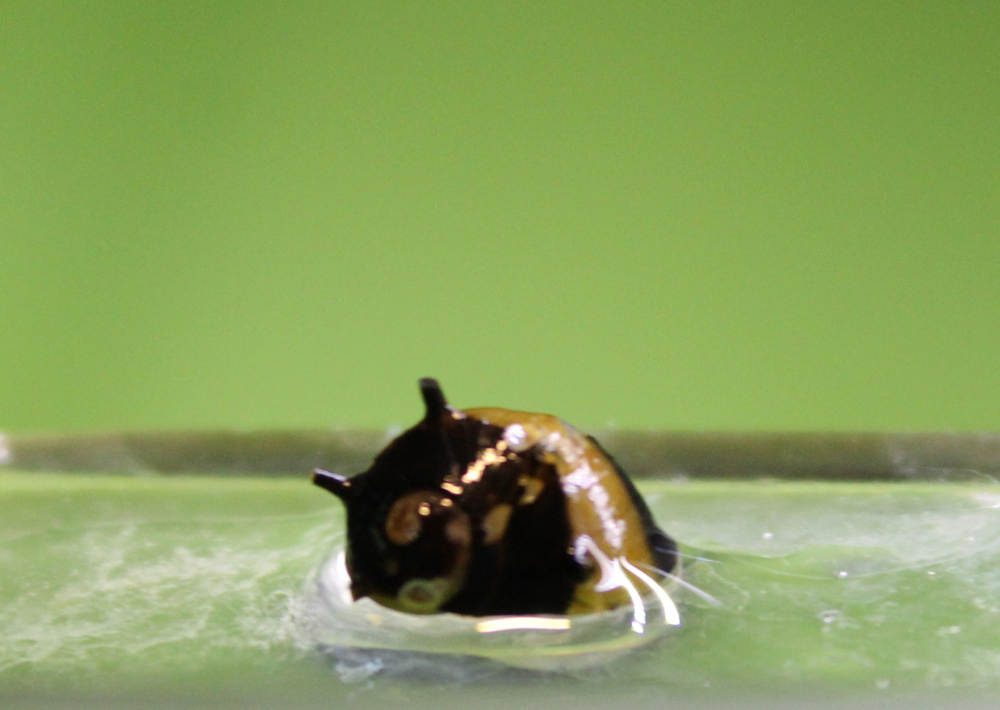
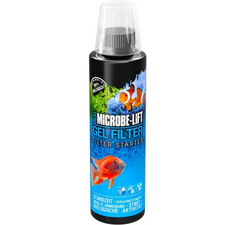
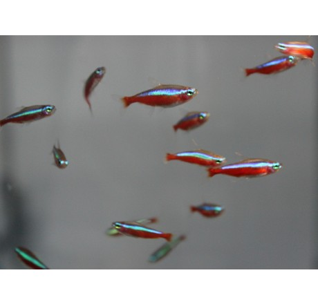
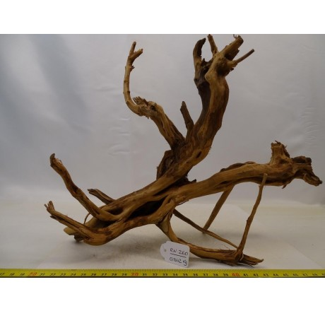

Catalogo

CLITHON CORONA - CARACOL ABEJA (PEQUEÑO)
$402,09
Este pequeño no llegará ni a 3 cm en muchos casos, son pequeños pero tienen un gran valor ya que ayudan mucho en la lucha contra las algas de los acuarios con pH alto.

MICROBE-LIFT GEL FILTER 473ML
$2916,57
Un rápido método para añadir las mejores bacterias posible a nuestros filtros, aplicado sobre el material filtrante directamente.

PARACHEIRODON AXELRODI / TETRA CARDENAL
$238,99
Conocido como Tetra Cardenal es uno de los básicos de acuario amazónico. Los tenemos disponibles jóvenes, de unos 2.5 cm (criados en cautividad). Una joya para la vista.

Raiz Slim
$3392,28
La raíz slim es una madera natural de alta calidad tanto para los acuarios plantados, y paisajistas (aquascaping), como para acuarios sencillos.